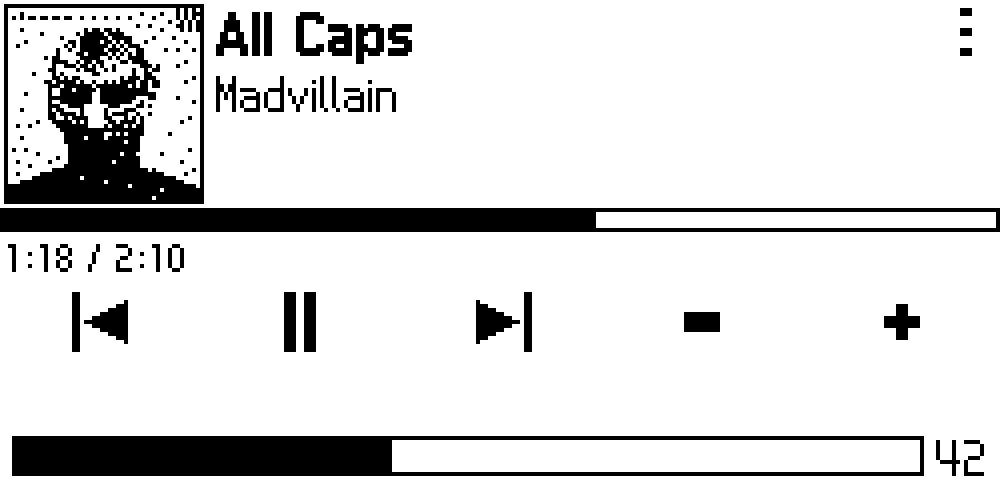
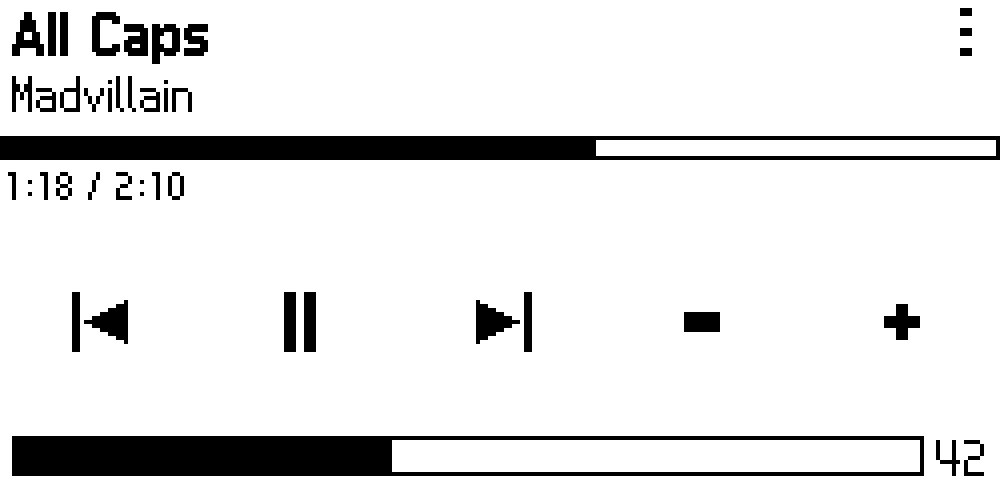
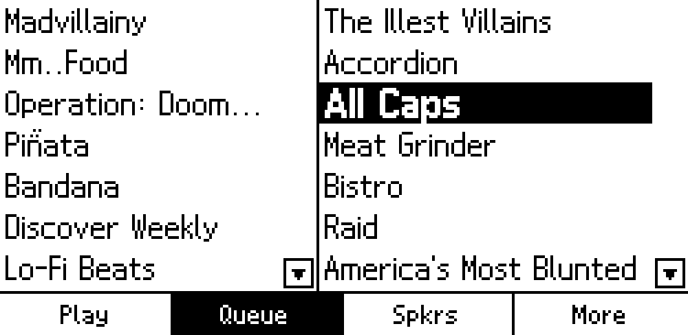
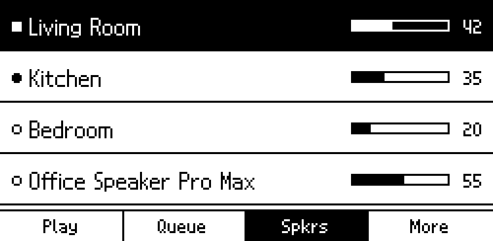
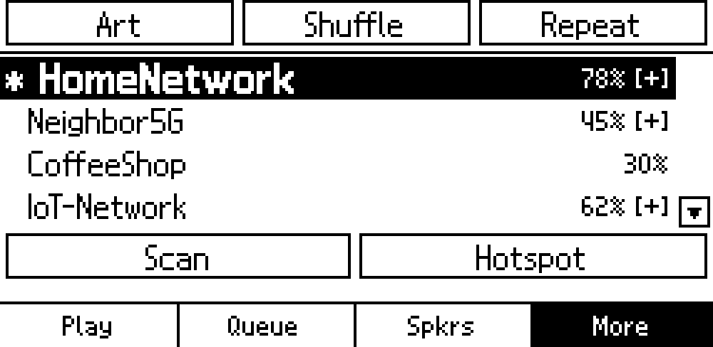

sonos-remote-eink
A touch e‑ink remote for Sonos on Raspberry Pi
Touch interface rendered at 250×122 pixels on a 2.13″ e-paper display. Built with Python, PIL, and SoCo. Compatible with any Raspberry Pi with WiFi and a 40-pin GPIO header.
- Raspberry Pi
- 250 × 122 px
- e-ink touch
- Python + SoCo
Features
- Now Playing
- Track info, progress bar, and transport controls. Optional dithered album art at 48×48 or 96×96 px.
- Queue & Favourites
- Browse side by side. Tap to play. Scrollable lists with on-screen arrows.
- Speaker Grouping
- See every speaker on the network. Tap to switch zones or group them together.
- Shuffle, Repeat, Art
- Toggle playback modes and album art from the More tab. WiFi setup built in.
- E-ink Display
- The screen holds its image between refreshes with no backlight needed. Updates only when something changes.
- Runs on Boot
- One install script, one reboot. The service discovers Sonos speakers automatically.
Screenshots
Native resolution — pixel-for-pixel what the e-ink display shows.





Hardware
| Component | Details |
|---|---|
| SBC | Any Raspberry Pi with WiFi and a 40-pin GPIO header |
| Display | Waveshare 2.13″ Touch e-Paper HAT (or compatible) — 250×122 px, B/W |
| Interface | SPI (EPD) + I2C (GT1151 touch) via 40-pin header |
Get started
git clone https://github.com/stigf/sonos-remote-eink.git
cd sonos-remote-eink
sudo bash install.sh
sudo rebootStarts on boot. Finds speakers automatically.